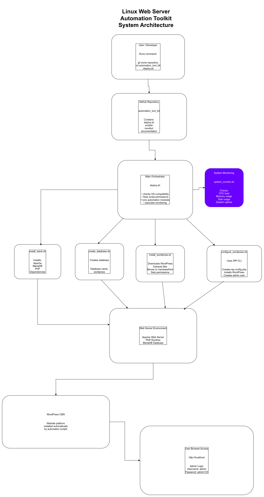
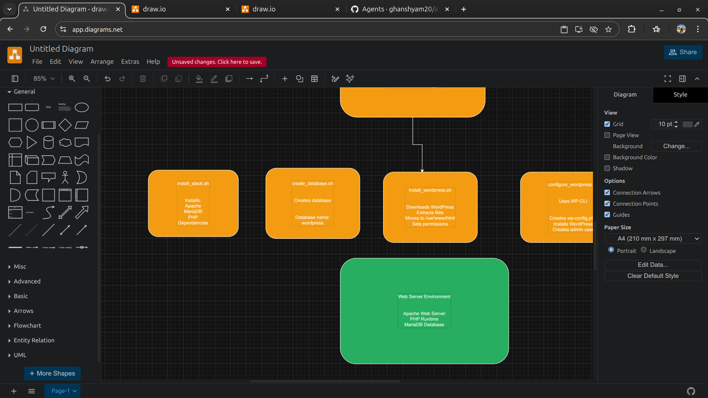
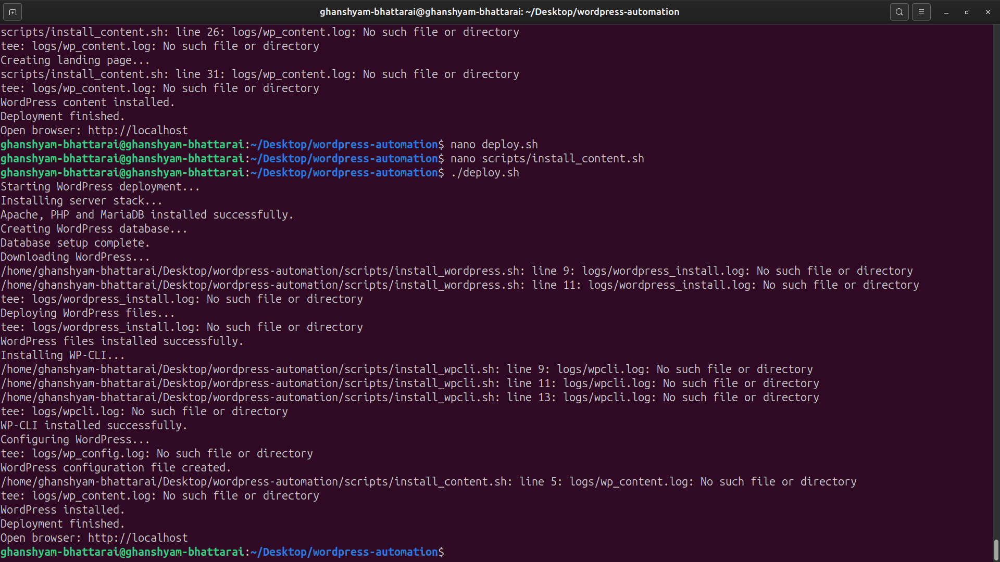

Project Motivation
During Linux administration practice I repeatedly had to install the same server environment again and again. Each setup required installing Apache, configuring the database server, preparing PHP and downloading WordPress. Even a small mistake in permissions or configuration could break the installation.
Because of this repetitive process I decided to design a Bash based automation toolkit. The goal was to convert the entire manual setup into an automated deployment workflow. Instead of executing dozens of commands manually, the entire server environment can be prepared using one command.
Problems Faced
- Repeated manual installation steps
- Configuration mistakes during setup
- Time consuming server preparation
- Difficult to recreate the same environment
- lets do it
Solution
The solution is a Bash automation toolkit that installs and configures the full web stack automatically. The scripts install Apache, MariaDB, PHP and WordPress while also performing system checks and monitoring.
Project Architecture

System architecture overview

Automation workflow diagram
Development Screenshots

Server stack installation

Running deployment script